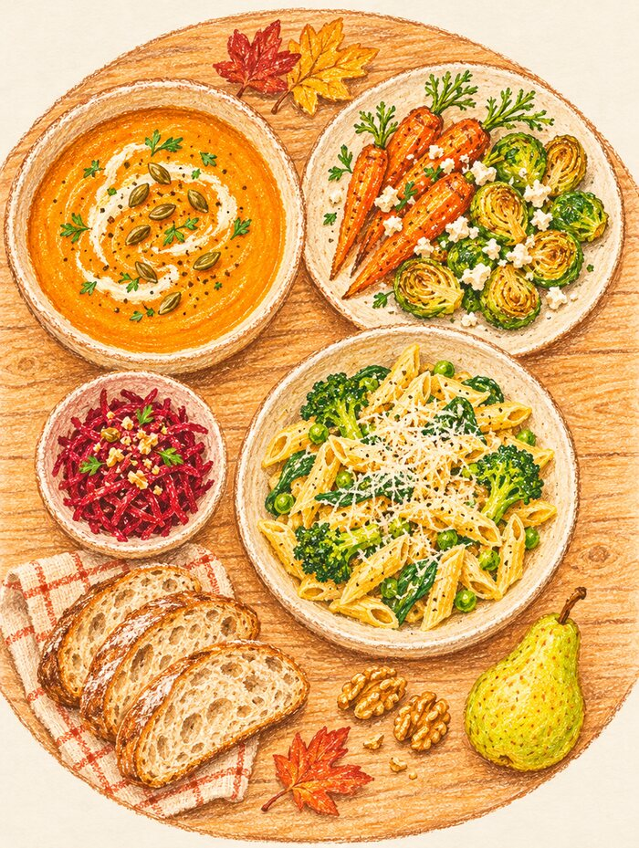

Anne-Charlotte@annecharlotte.diet
Les légumes de novembre
16 légumes, 64 recettes gourmandes
Dont 16 en 7 minutes chrono.« En hiver, à part la soupe, j’en fais quoi ? » Voilà ma réponse : les légumes qui poussent chez nous en ce moment, et quatre façons de manger chacun. Des vrais repas, qu’on a envie de refaire.
Télécharger le guide PDF gratuit · 18 pages · 2,3 Mo- La grille à coller sur le frigo, à cocher au fil du mois
- Une page par légume : cuit ou cru, chaud ou froid
- Un express de 7 minutes dans chaque légume
